Mobile app and UI kit
Oh Snap
Mark, Set, and Snap Location
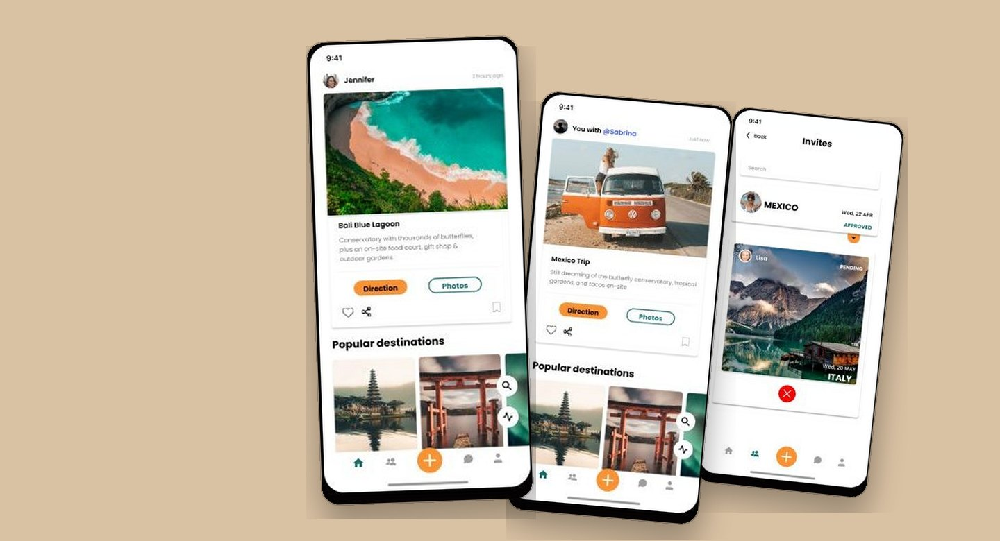
Overview
OH SNAP! is designed to enable content creators by simplifying collaboration and trip planning. Users can organize collaborative trips, document shared experiences, and build meaningful connections on one platform.
With features that support efficient planning and content sharing, the app creates a space where content creators can connect, create and grow their network through real world collaboration. A social media app built for content creators to discover, plan and share collaborative trips with ease.
Problem
- Difficult to find reliable collaborators in the creator space
- No centralized platform to plan and share content trips.
- Safety risks when meeting or traveling with unfamiliar people.
- Lack of tools to reflect and document collaboration experiences after the trip.
Solution
- Creators can discover and join collaborations via feed or page search.
- Oh Snap provides trip planning, shared itineraries and shared posts.
- Users can view verified profiles and activity history before collaborating.
- Post trip posts build history and accountability.
My role
In this case study, I took on the role of UX/Ul Designer to explore how a platform could better support content creators in planning safe and meaningful collaborations. I was responsible for the entire design process, from defining the problem, conducting research, designing wireframes, high fidelity mockups, and prototyping. My focus was on creating an intuitive experience that balances functionality with safety, while also addressing the unique needs of the creator community.
Process
1. Discovery At this phase, I explored the core concept of the app: facilitating collaboration among content creators while ensuring a safe community through reviews. I analyzed competitor apps and market trends to understand user expectations around social collaboration and trust building features. This helped identify key user needs and issues related to trip planning and collaborator checking. 2. Ideation Based on the insights from this discovery, I brainstormed features that address collaboration and safety issues. Key ideas included a trip collaboration planner and a content sharing feed for shared experiences. Wireframes and flowcharts were created to visualize these concepts and establish the user journey. 3. Design Process I translated the wireframes into a high fidelity UI design that focuses on usability and trust. The design incorporates clear collaboration tools, visible review indicators, and intuitive navigation optimized for mobile devices. Visual consistency is maintained through a clearly visible color scheme, typography, and component reuse. 4. Usability Testing Although formal user testing was not part of the project scope, I conducted internal heuristic evaluations to identify potential usability issues. I also created test scenarios that simulated typical user interactions such as creating travel invitations and posting collaborators. These activities informed small fixes to improve clarity and overall user experience.
Discovery
Discover and Understanding The first step I took was to understand the purpose and target users of this app. I started by studying existing social media platforms and collaboration tools used by content creators. From this research, I identified gaps in existing solutions, especially around trip planning and safety features, which helped shape the design direction. This app is a new product developed to address unmet needs in the social collaboration space for content creators.
Competitor Analysis To better understand the market landscape and identify differentiation opportunities, I conducted a competitor analysis focusing on platforms related to social collaboration, trip planning, and community safety for content creators. This analysis highlighted their core features, strengths, and limitations relevant to my project objectives.
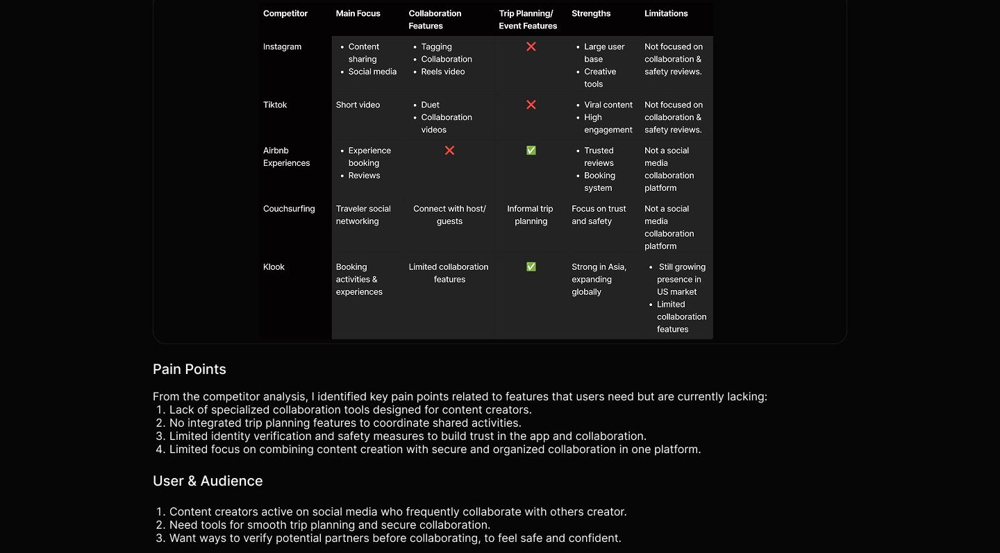
Ideation
User Flow
I created this user flow to outline the main steps that content creators take to plan collaborative journeys and publish posts. It illustrates how the app facilitates smooth coordination between users, from inviting collaboration to sharing the final content while emphasizing trust and organization throughout the process.
User story: As a user, I want to be able to collaborate with other creators, so that I can travel together with someone who shares similar interests
Upload photo Have an Splash Create Submit Homepage Collaboration with Succes account? Collaboration Invitation Screen collaboration
Message Sign Up Login
Create Account
Success create new account
Guide Screen
User Journey
This section illustrates the typical experience of a content creator using the app, from finding potential collaborators to completing the journey and sharing content. Based on the pain points identified through competitor analysis, this journey highlights real user frustrations and expectations, helping to shape features that prioritize safety, trust, and seamless collaboration.
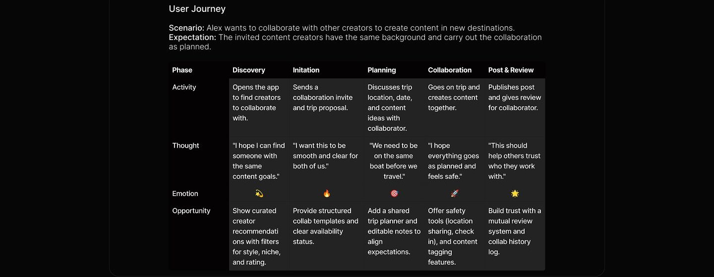
Design system
After identifying the problem and analyzing the pain points at each stage of the user journey, I started designing the core features that would address those needs. The design process was focused on creating an experience that was intuitive, secure, and effectively supported creator collaboration.
Design System Teusale components ike lion, oreg, and ere. ament created a desian system including color style tungaranhy and
Neutral colors
Neutral 700 Neutral 600 #080808 #484B48
Typography
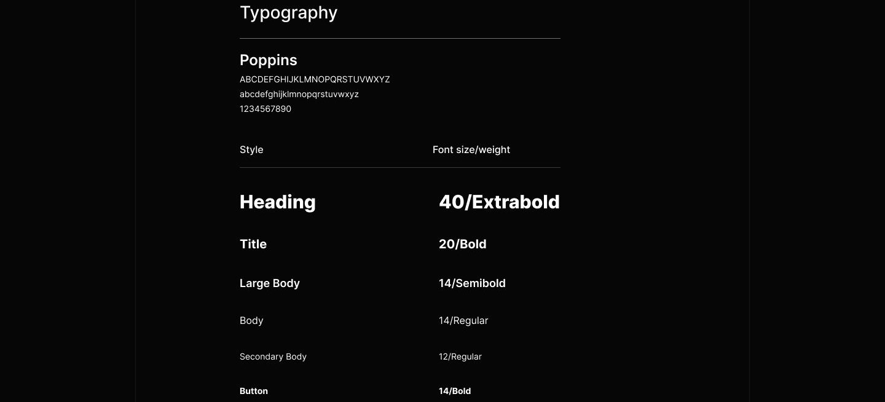
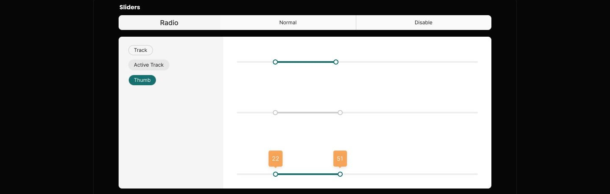
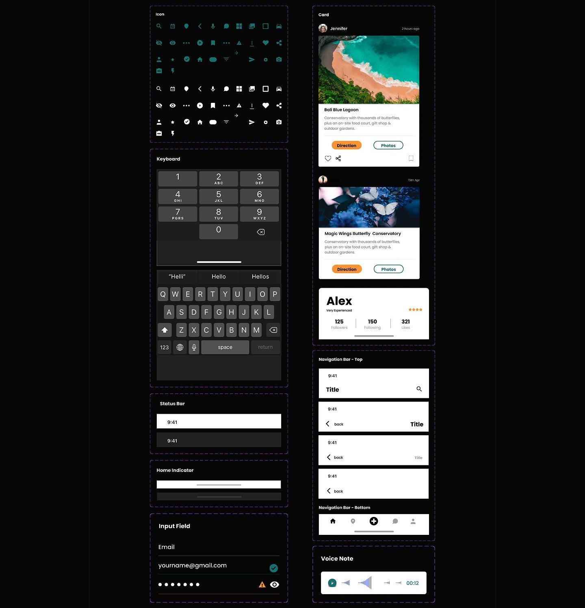
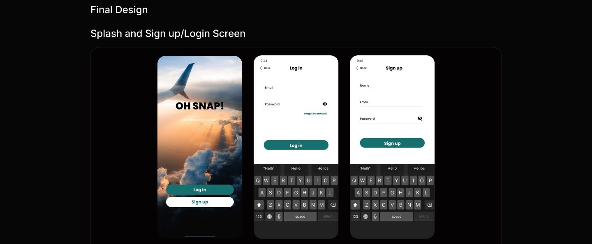
This section features the entrance into the application experience. The splash screen sets the tone with striking travel themed visuals and a bold title that grabs attention. It invites users to log in or register with prominent CTA buttons. The login and registration screens follow a consistent and clean layout that prioritizes ease of use with intuitive input fields, password visibility firects, and a "Forgot Password?" link to support accessibility and usability.
Onboarding Guide
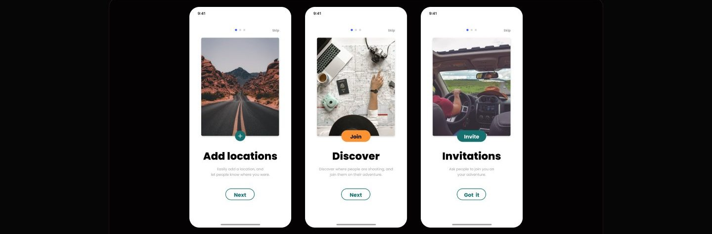
As a new app that focuses on collaboration between content creators, Oh Snap presents an onboarding guide to introduce key features in a brief and engaging manner. Consisting of three screens, users are invited to understand how they can add visited locations, discover popular locations from other users, and invite others to join their adventure. Each screen is designed with relevant visuals, clear CAs and concise messaging so that new users can immediately understand the key value of the app. This approach aims to create a pleasant first experience while building a spirit of collaboration from the start. Feed or Homepage
On the homepage/feed page, there are two versions of the display to show the difference in user experience before and after they interact with the app. In the first version (left, users just see popular destination content shared by other users without any personal engagement. The aim is to provide initial inspiration and encourage exploration. Once users start collaborating and sharing their journeys (right), the feed will show more personalized posts, such as travel content with friends, complete with location information and navigation options. This change not only reflects user activity, but also reinforces the app's core value of collaboration in sharing vacation experiences.
Collaboration
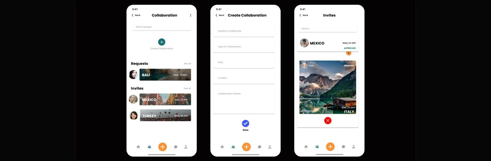
The Collaboration feature allows users to plan trips with others in an easy and structured way. Users can access the main collaboration page which displays a list of Requests (collaboration requests from other users) and Invites (collaboration invitations they have received). To create a new collaboration, users can simply tap the "Create Collaboration" button, then fill in information such as the collaborator's name, collaboration type, date, location, and activity details. Once the invitation is sent, users can monitor the status of the collaboration on the Invites page. For example, whether it has been approved, is still pending, or needs to be rejected. This flow is designed to make collaboration between users seamless and interactive, while giving users full control over their travel activities.
Post Collaboration Content
After content creators agree to the collaboration, they can start creating content by pressing the "+" button located in the center of the navbar. This button is the main door to creating new posts, including collaborative content. After pressing the button, users will be directed to the camera view to take pictures/video or mobile gallery. Once the content is successfully created, the user goes to the upload page to add details such as captions, location, hashtags, and tag the collaborators involved.
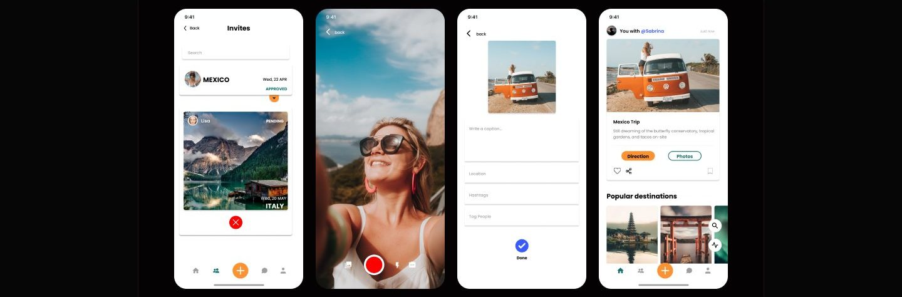
When the content is published, the system automatically displays the collaborator at the top of the post, for example "You with @Sabrina", to indicate that the content is the result of collaboration. The addition of this information aims to recognize collaborators while increasing credibility and interaction between users. At the end of the post, users can also find buttons such as "Direction" to get to the location in question and "Photos" to view travel documentation. This feature not only eases the collaboration process, but is also designed to create a more interactive and authentic sharing experience.
Message
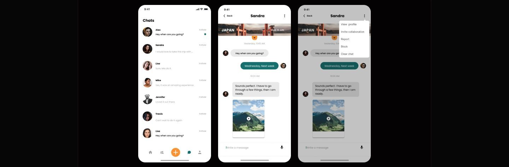
Not only a place to exchange messages, the Message page also serves as a discussion space between content creators who want to plan or talk about further collaboration. This is where conversations can develop into real opportunities. Through the options menu on the top right corner, users can directly invite their interlocutors to collaborate through the Invite collaboration feature. Once an agreement is reached, users can continue to create collaborative posts by pressing the "+" button in the center of the main navbar.
Usability testing
After completing the overall design, I planned a usability testing session to validate the interaction flow with real users. The primary goal was to identify any usability issues and uncover opportunities to improve the experience further. To achieve this, I prepared several task based scenarios to simulate realistic user behavior within the app: 1. Now you're on your homepage. You want to invite collaboration with other content creators. How do you do that? 2. Currently you are chatting via message page with another content creator and you are planning a vacation to a new destination together. How would you invite a collaboration through the Oh Snap! app? 3. You are required to fill in some information when inviting another content creator. How do you fill it in? 4. After you go on a trip with your partner, you want to upload the documentation you have during your vacation. What should you
Reflection
If I had more time to continue this project, the following steps would be my priorities: 1. Conduct additional user research to uncover deeper pain points and gather broader insights from potential users. 2. Run usability testing based on the planned scenarios to validate the user flow and identify friction points. 3. Iterate on the design by addressing usability issues and refining features to enhance the overall experience.